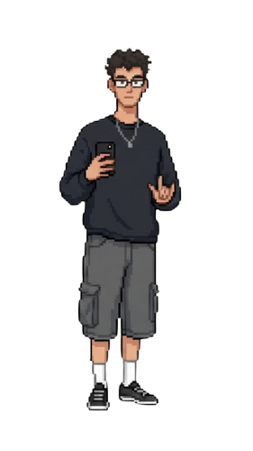
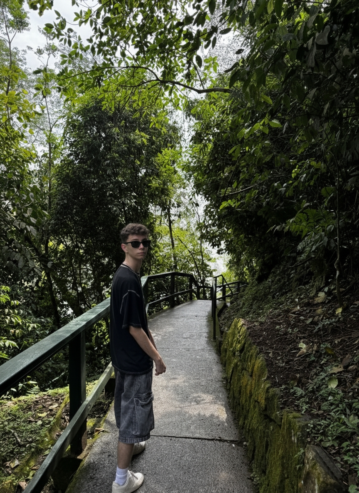
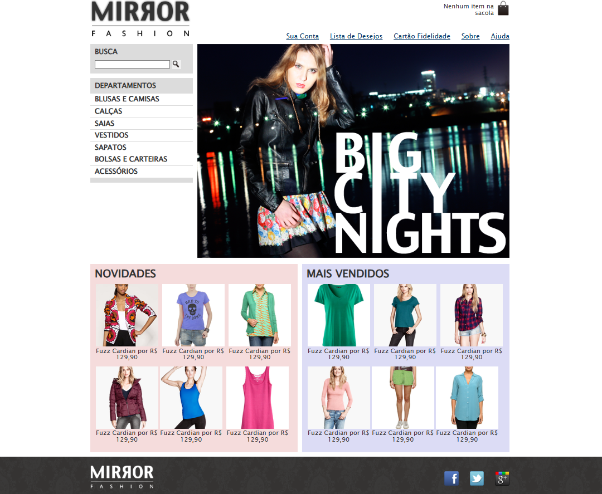
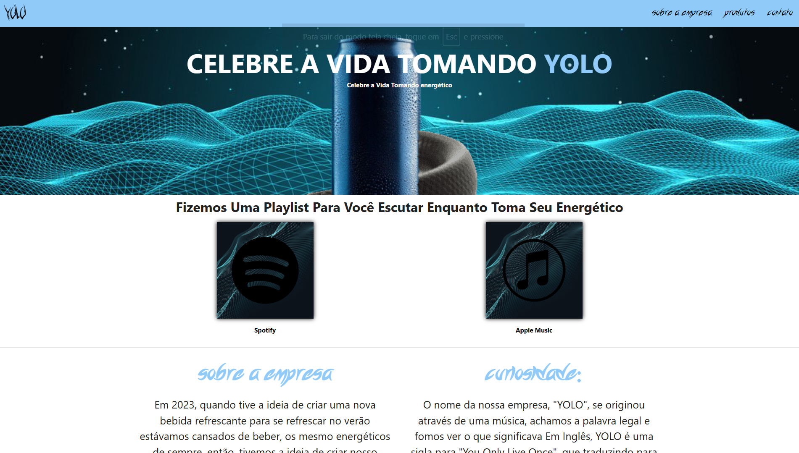
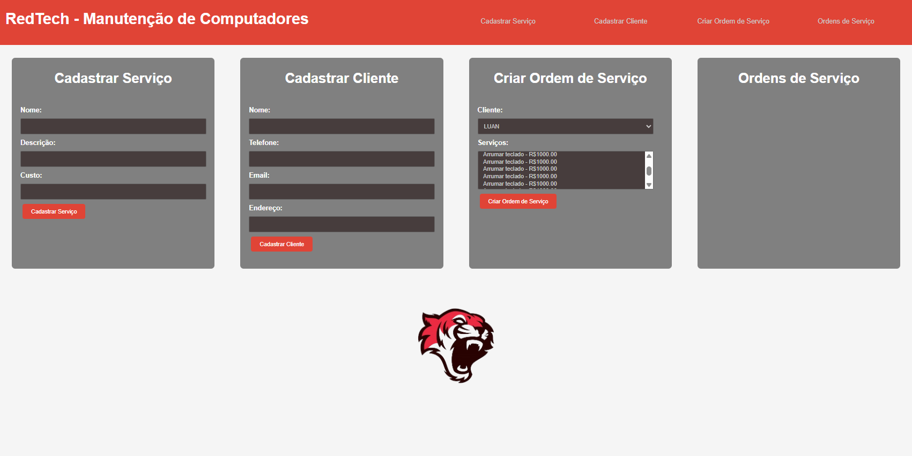
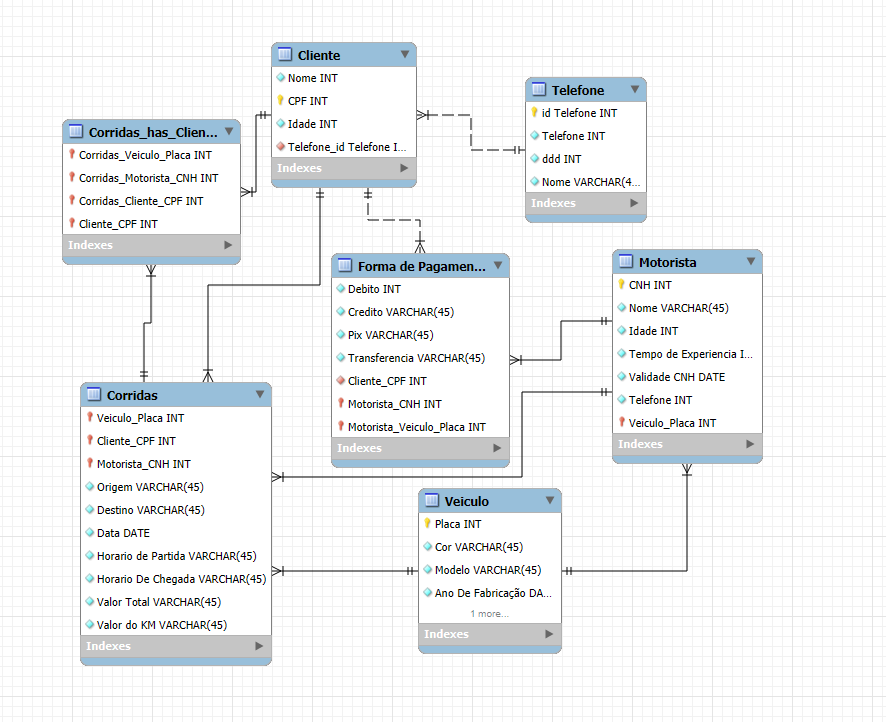
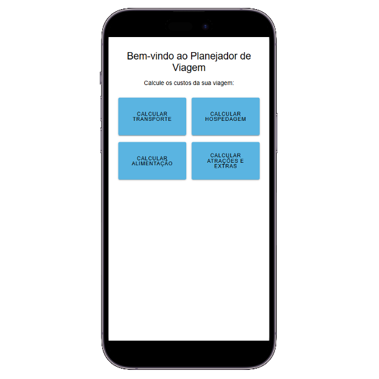
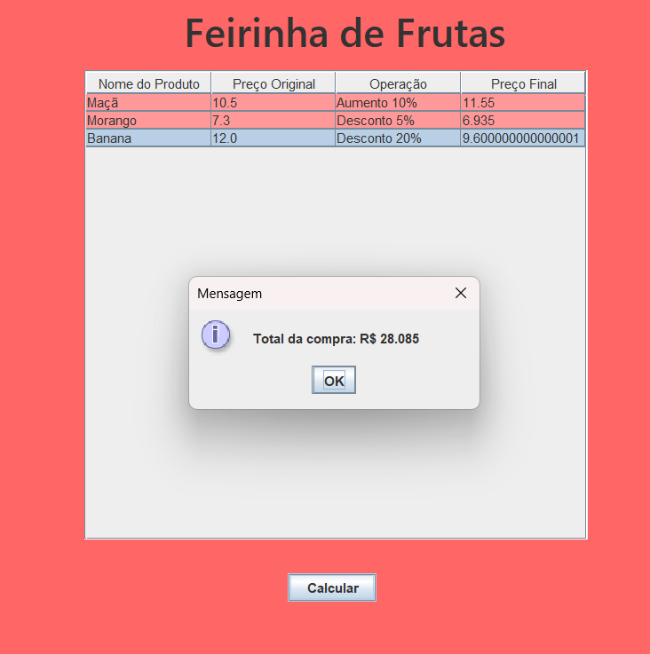
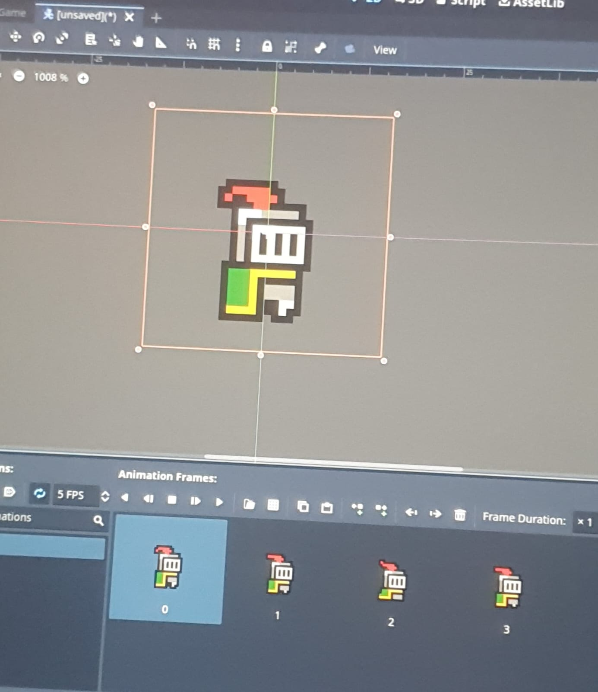

Sobre mim
Ola, sou estudante de Sistemas para Internet na Fatec - Lins.
Sou apaixonado por gatos e musica, no tempo livre gosto de
jogar jogos online, viajar, escutar musica e fotografar
paisagens
Sou desenvolvedor front-end com experiência em HTML, CSS e
Angular, mas estou aberto para aprender e explorar novas
tecnologias, mas tambem gosto das áreas de UX design e banco
de dados.
Projetos

mirrorFashion

Yolo

RedTech

Gravadora de Musica

Planejador de Viagem

POO Em Java
Extras
Congresso

Mini Curso
Habilidades
Currículo
Informações Pessoais
Luan Henrique
luan.prezottofranca@gmail.com
(14) 99730-0928
Pongaí, SP
Formação
Sistemas Para Internet
Graduação tecnológica com foco em desenvolvimento web front-end, abrangendo programação orientada a objetos, arquitetura de software, banco de dados relacionais e não relacionais, frameworks front-end e back-end, metodologias ágeis, UX/UI design e gestão de projetos. Formação prática com projetos reais e integração com o mercado de trabalho.